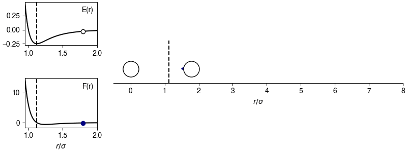

Molecular dynamics simulations#
Additional Readings for the Enthusiast#
Frenkel and Smit [2], Ch. 4, 6.2
Goals for Today’s Lecture#
Understand how simulations are advanced in MD
Derive the equations of motion from the Verlet algorithm
Related energies and forces
Molecular dynamics: the idea#
We have now introduced Metropolis (or Metropolis-Hastings Monte Carlo as a rigorous method for sampling configurations from the canonical ensemble by generating a Markov chain of states with a correct probability. However, Metropolis Monte Carlo still suffers from drawbacks.
Which of the following is not a drawbacks of Metropolic MC?
We must ensure effective sampling of the probability distribution
This is a drawback – we have to ensure that our sampling is ergodic.
Try again!
We can use non-differentiable potential energy functions.
This is a benefit, not a drawback, correct!
Metropolis MC has no concept of time.
This is a drawback – Metropolis MC cannot be used to calculate time-dependent properties of a system. For example, one cannot calculate a diffusion coefficient, which is an equilibrium property of a system, from a MC simulation.
Try again!
Metropolis MC has limited ability to study non-equilibrium behavior.
This is a drawback – Metropolis MC assumes we are pulling from an equilibrium probability distribution.
Try again!
In Molecular Dynamics (MD), we avoid these two issues by introducing an approach which tries to closely resemble experimental procedures. Specifically, we assume that each particle in the system obeys Newton’s laws of motion, and then apply these equations of motion repeatedly to generate system configurations. In classical molecular dynamics, it is assumed that quantum effects do not contribute. Specifically, we discretize a time interval into distinct steps, and at each step we calculate forces acting on each particle to determine the next configuration. There is no stochastic element to a basic molecular dynamics simulation, although in practice the limitations of computer precision ensure that there will always be some minimal randomness introduced into a simulation.
Since we are calculating forces that attempt to reproduce the features of a physical system, each configuration of the system generated during a MD simulation is physically obtainable (in principle) and we do not have to worry about particles overlapping. Moreover, we can explicitly calculate a timescale associated with behavior, and can also model non-equilibrium events. There are still issues with the technique - notably, the problem of ensuring that we simulate systems for sufficiently long enough times to observe the behavior we are interested in - but the problems are distinct from those of MC simulations.
We will start by defining a basic MD algorithm, in analogy to the basic MC algorithm:
Choose a starting configuration, \(\mathbf{r}^N(t)\) where \(t=0\).
Generate initial particle velocities, \(\textbf{v}^N(t)\) where \(t=0\).
Compute the forces acting on all particles, \(\textbf{f}^N(t)\), at time \(t\).
Update \(\textbf{v}^N(t)\) and \(\textbf{r}^N(t)\) using \(\textbf{f}^N(t)\) and advance the time to \(t+\Delta t\), where \(\Delta t\) is the simulation timestep.
Repeat steps 3-4 until a sufficient number of timesteps have elapsed. Periodically compute and save the value of some observables (e.g., temperature, pressure).
Approximate the ensemble average value of some observable \(Y(\mathbf{r}^N)\) by averaging over states sampled during a period of time during which the system is at equilibrium.
Conceptually, the algorithm is fairly straightforward; we will now explore details of its implementation. We will skip the step about generating initial velocities and come back to that discussion in the next lecture; first, we will discuss the core two steps of the MD algorithm.
Calculating forces#
The most time-consuming, and perhaps most important, aspect of the MD algorithm is the force calculation. First, recall that we generally have defined interactions in terms of energies, which was used directly in the Metropolis Monte Carlo algorithm. We can write the force on each particle as:
Here, \(\textbf{f}_i\) is the force acting on particle \(i\), \(E(\textbf{r}^N)\) is the potential energy of the entire system, \(x_i, y_i, z_i\) are the \(x/y/z\) positions of particle \(i\) (i.e. the three components of the vector \(\textbf{r}_i\)), and \(\hat{\textbf{x}}, \hat{\textbf{y}}, \hat{\textbf{z}}\) are unit vectors in each of the Cartesian directions. The force on each particle is thus the gradient of the potential energy function, and in general is a function of all other particle positions which are calculated by summing pairwise potentials.
For example, let’s consider the calculation of the forces on a single particle in a system of \(N\)-particles that only interact via pairwise Lennard-Jones potential, where
We can then calculate the force on particle \(i\) (which only depends on the interactions of \(i\) with other particles, and not on the interactions of other particles with each other) as:
Here, \(r_{ij} = \sqrt{\textbf{r}_{ij} \cdot \textbf{r}_{ij}}\) is the scalar distance between particle \(i\) and \(j\), where \(\textbf{r}_{ij}\) is the vector distance and we compute the scalar distance from the dot product.
Show that \(\textbf{f}_i = -\sum_{j\ne i} \frac{48 \epsilon_{ij}}{ r_{ij}^2} \left [ \left (\frac{\sigma_{ij}}{ r_{ij}}\right )^{12} - \frac{1}{2}\left (\frac{\sigma_{ij}}{ r_{ij}}\right )^6\right ] \left [ x_{ij} \hat{\textbf{x}} + y_{ij} \hat{\textbf{y}} + z_{ij} \hat{\textbf{z}}\right ]\)
Show derivation
Substituting in this expression to the equation above gives us a term that is very similar to the LJ potential (and hence can be calculated with minimal additional computational expense).

The chosen sign convention is because of how we define the distance in the x-direction; if \(x_{ij} > 0\), the x-position of particle \(j\) is more positive than the x-position of particle \(i\), then the magnitude of the force will be positive for \(r_{ij} > 2^{1/6} \sigma\) and the sign of the force will correctly point in the +x-direction, indicating that particle \(i\) will experience a force to move toward particle \(j\). This agrees with the expectations of an attractive potential.
Finally, recall that because we obey Newton’s laws of motion, we can calculate the forces of the entire system by summing over pairs of particles, calculating the force on one particle due to the other one, and using Newton’s 3rd law to immediately obtain the force on the other particle in the pair by reversing the sign of the force calculated. This approach also reduces the number of necessary calculations.
Equations of motion: Verlet algorithm#
The basic algorithm for molecular dynamics (MD) consists of two basic steps: the calculation of forces on all particles and the update of all particle positions based on those forces. Forces are typically calculated based on pairwise interactions between particles. The next step in our algorithm is to update particle positions by integrating the equations of motion. Again, this will roughly follow from Newtonian mechanics. The simplest way we can write an expression for the position of a particle at a time \(t+\Delta t\) based on its position at time \(t\) is by Taylor expanding the expression for the new position \(\textbf{r}_i(t+\Delta t)\) around the old position \(\textbf{r}_i(t)\):
We recognize this as the typical expression for updating positions according to Newton’s laws, with the force term normalized by the mass, \(m\). We also ignore terms of fourth order and higher. We can similarly write:
Adding these two expressions together yields the
- Verlet algorithm#
- \[\begin{split}\begin{aligned} \textbf{r}_i(t+\Delta t) + \textbf{r}_i(t-\Delta t) &= 2 \textbf{r}_i(t) + \frac{\textbf{f}_i(t)}{m}\Delta t^2 + \dots \\ \textbf{r}_i(t+\Delta t) &\approx 2 \textbf{r}_i(t) - \textbf{r}_i(t-\Delta t) + \frac{\textbf{f}_i(t)}{m}\Delta t^2 \end{aligned}\end{split}\]
for updating the positions of particles in a Molecular Dynamics simulation. Note that by summing together the two different expansions, we remove the third order term and hence the error is of fourth-order and higher in the timestep, \(\Delta t\), which is generally negligible. In practice then, we can calculate our forces at time \(t\), and knowing the previous positions of a particle, \(\textbf{r}_i(t-\Delta t)\), and its current position, \(\textbf{r}_i(t)\), we can obtain a new position without ever calculating velocities.
For some applications, though, such as calculating the temperature it is necessary to know the velocities of the particles.
What are the velocities of a system, according to the Verlet algorithm?
Click for answer
Here we ignore the term of order \(\Delta t^3\) and obtain an error that is on the order of \(\Delta t^2\) (since we divide through by \(\Delta t\)). In practice, however, this expression is often subject to numerical error since it involves dividing by a very small number (\(\Delta t\)) which is difficult to accurately calculate in single-precision molecular dynamics code.
Velocity-Verlet integrator#
The Verlet algorithm is a perfectly reasonable algorithm, and is often used in many MD simulations. However, the desire to often have velocities computed at the same time as positions (again for reasons such as calculating the temperature) leads to the use of algorithms such as the
- Velocity-Verlet algorithm#
Identical to the Verlet algorithm, but with an explicit calculation of particle velocities
Velocity-Verlet also fixes a small problem, which is that in the very first timestep of a simulation the position \(\textbf{r}_i(t-\Delta t)\) is not known. This algorithm again starts from a Taylor expansion for the coordinates:
Here we have ignored terms of third-order and higher in \(\Delta t\). Unlike the Verlet algorithm, we now have an explicit step that calculates \(\textbf{v}_i(t + \Delta t)\):
We can show that this algorithm is (mathematically) equivalent to the Verlet algorithm by writing:
That is, we expand the position at time \(t+\Delta t+\Delta t\) around the position at time \(t+\Delta t\). Similarly, we can rewrite Eq. {eq}`vv_eq} for the position as:
Summing these two values yields:
Substituting in the Velocity-Verlet expression for the velocity yields:
This final expression matches the form of the original Verlet algorithm. The Velocity-Verlet algorithm is most efficient if a slightly different order of steps is used when updating positions and velocities since the velocities at time \(t+\Delta t\) can only be computed once the forces, and thus positions, are known at time \(t+\Delta t\). The typical MD algorithm for the Velocity-Verlet algorithm then becomes:
For a set of particle positions, \(\textbf{r}^N(t)\), velocities, \(\textbf{v}^N(t)\), and forces, \(\textbf{f}^N(t)\), calculate the new positions using \(\textbf{r}_i(t+\Delta t) = \textbf{r}_i(t) + \textbf{v}_i(t) \Delta t + \frac{\textbf{f}_i(t)}{2m}\Delta t^2\).
Calculate the first half of the velocity update using \(\textbf{v}_i(t + 1/2 \Delta t) = \textbf{v}_i(t) + \frac{1}{2m} \textbf{f}_i(t)\Delta t\). This half uses forces only at time \(t\). Note that notationally we call this a “half-integer” timestep only to distinguish the velocities computed here from the actual velocities at time \(t\) and \(t+\Delta t\); these velocities should not be used the calculation of any velocity-dependent quantity.
Calculate the new forces at time \(t + \Delta t\) using the new positions, \(\textbf{r}^N(t+\Delta t)\).
Finish the velocity update now that new forces are available using \(\textbf{v}_i(t+ \Delta t) = \textbf{v}_i(t+ 1/2\Delta t) + \frac{1}{2m} \textbf{f}_i(t+\Delta t)\Delta t\).
Evaluate the kinetic energy for step \(t+\Delta t\) if desired; potential energy will have been evaluated during force calculation (if desired).
This half-timestep approach to updating the velocities is not strictly necessary, but prevents having to store forces at both time \(t\) and \(t+\Delta t\), minimizing the memory load. The Velocity Verlet algorithm is very commonly used, as it is more numerically accurate than standard Verlet while calculating velocities (and hence kinetic energies) for the same timesteps as the positions. Note that the improved numerical accuracy comes in part from not having to divide a difference in positions by a timestep; these quantities are all very small and can result in numerical errors when used in practice (even though the approaches are identical mathematically).